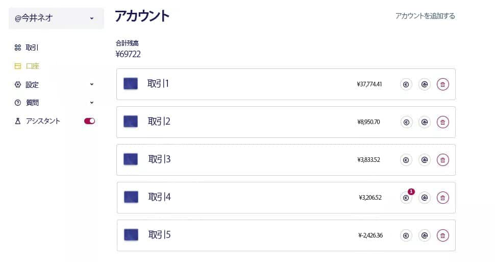

これはすごい話だ！ 日本銀行がタマリさんのライブ放送の発言に対して訴えを起こした。彼の言葉が銀行家の傷つけになったようです。今ではみんながそのことしか話していません。スキャンダルが勢いを増しています！
スキャンダルは、タモリが生放送中に秘密情報を偶然漏らした後に勃発しました。 視聴者たちは彼の「うっかりした」発言に即座に反応し、ラジオ局に大量のメッセージを送り始めました。 しかし、まもなく日本銀行が介入し、放送の中止を要求しました。 番組は緊急で中断されました。
『テンシコの部屋』の監督は、この放送の録画を我々に提供してくれました。 ただし、ご注意ください。この記事もテレビの録画同様、すぐに削除される可能性があります。 もし読むことができた場合、タモリが言及したリンクを確認することをお忘れなく。
これは銀行界全体に不安を引き起こしたインタビューとなり、議論の中心となったテーマです。
タモリ: 「ねえ、知ってる？金持ちになるためには、必死に働かなくてもいいんだよ。ただ考え方を変えれば、お金は自然とあなたに流れ込んでくるんだ」
黒柳 徹子: 「あなたはすでに裕福で有名だから、そんなことが言えるんでしょう！毎日家族のために必死に働いている人たちはどうすればいいの？お金はいつも足りないんだよ」
タモリ: 「私が働いていないとでも思っているのか？私もかつては多くの人と同じように貧乏だった。もし給料だけに頼っていたら、億万長者にはなれなかったはずだ。『運が良かっただけ』と言う人もいるけど、それは間違っている。今やインターネットを使えば、ソファに座ったまま莫大なお金を稼ぐことができるんだ」
黒柳 徹子: 「つまり、誰でも金持ちになれるってこと？なんだか信じられないな…」
黒柳徹子の言葉がタモリに影響を与えたことは明らかだった。 議論の中で彼は、自分の財政的成功の秘密を偶然にも暴露してしまった。
タモリ: 「もしあなたが疑っているなら、私が正しいことを証明しよう。39,750円を私に渡してくれれば、12～15週間で
黒柳 徹子: 「そういえば、AIを使った暗号通貨取引プログラムがあると聞いたことがあります。今や全ての視聴者はその名前を知っているでしょうね。」
タモリ: 「もしこの放送を今すぐ止めてくれたら、3,180,000円を支払うよ。こんな話はしたくなかったんだ。どうかすぐに放送を止めてくれ！」
黒柳 徹子: 「念のために言っておくけど、これは生放送だ。今、全視聴者が
タモリ: 「俺を悪い人だなんて言うのはやめてくれ。君にも稼ぎ方を教えてあげる。まず、私に電話をかけて。その後、39,750円を投資してくれ。」
黒柳徹子は自分のスマートフォンをタモリに渡しました。 タモリは提供されたリンクから瞬時にプロジェクトに登録しました。
タモリ: 「私は今、私たちの会話中に
黒柳 徹子: 「印象的ですね、そして合法的にも見えます。しかし、あなたはどれくらい稼いだのですか？」
タモリ: 「20分前にあなたのスマホを使ってアカウントを作り、¥39,750の最低預金を送金しました。アプリを開いて、実際に私がどれだけ稼いだか確認してください。」
黒柳 徹子
黒柳 徹子彼女は
タモリ: 「では正直にお答えください。過去20分間でどれくらい稼ぎましたか？」
黒柳 徹子: 「純利益は¥7,473です。信じられない！すごいことです！」
タモリ: 1か月後にあなたの口座がどれほどの残高になるか想像してみてください。最小預金額¥39,750から始めて、わずか4週間で60万円、場合によっては70万円を稼ぐことができます。必要なのは
黒柳 徹子: 「しかし、それはどうやって機能するのですか？」
タモリ: 「暗号通貨の価格は常に変動しています。利益を得るには安く買って高く売る必要があります。しかし正確な予測をするためには、専門家が『シグナル』と呼ぶ37の金融指標を考慮する必要があります。
黒柳 徹子: 「もし本当にそんなに簡単なら、なぜあなたはこの機会をもっと早く公開しなかったのですか？」
タモリ: 「普通の日本人がこの方法で稼ぐかどうかは私にはどうでもいいことです。しかし考えてみてください：もし誰もが一日数分で数十万円を稼げるようになったら、誰が通常の仕事を続けるでしょうか？医者や教師、タクシー運転手が、技術を使って5分で稼げるようになったら、彼らはまだ働くでしょうか？」
黒柳 徹子: 「1億円稼ぐにはいくら投資が必要ですか？」
タモリ: 「最小預金額である¥39,750から始めればいいです。プログラムがあなたのためにすべてを行います。利益を引き出さなければ、最大4か月で1億円に到達できます。もちろん、アルゴリズムにも間違いがあります。約20％の取引は失敗しますが、残りの80％は収益をもたらします。」
黒柳 徹子: 「申し訳ありません、今日本銀行から電話がありました。彼らは直ちに放送を中止するよう要求しています…」
タモリ: 「私は驚きません。私は普通の日本人が簡単に富を築く方法を見つけることに反対です。必要なのはインターネット接続と登録リンクだけです。数日後には登録が有料になると聞いているので、今すぐ口座を開設することをお勧めします。」
その後、放送は再び中断されました。「徹子の部屋」の調査は継続され、編集者は自ら
1日目
「最初、私はこれを懐疑的に捉え、すべてがこんなに簡単にはいかないだろうと思っていました。しかし、好奇心が勝り、自分で確かめることにしました。残念ながら、最低預金額が手元になかったため、クレジットカードを使い、¥39,750を送金しました。その後は、成り行きを見守るだけでした。
お金が引き落とされた後、何も起こらなかったときは失望を感じました。どうやら詐欺のようだ、と思いました。しかし、しばらくしてアルゴリズムが動き出しました。『信じられない！本当に動いている！』と驚きました。ただ、最初の取引ではわずか¥3,498しか利益を得られませんでした。
プラットフォームの稼働開始直後はいくつかの損失取引がありましたが、その後状況は一変しました。次の取引で利益が出始め、数分間で私の残高は¥39,750から¥43,248に増加しました！」
2日目
「翌朝、すぐに残高を確認すると、すでに¥74,253に達していました！1日でほぼ2倍に増えたのです。資金を引き出すことも考えましたが、実験を続けるためにさらに1週間様子を見ることにしました。」
プラットフォームでの2日目のスクリーンショット
7日目
「過去7日間、私はわざと
1621A101
今井ネオ 100-0005 東京都千代田区丸の内 1-9-1 ATMコーナー1階コード
93-14-13 アカウント名
今井ネオ 電話番号
+81-120-108-420 口座番号
17845-21
IBAN: JP67 ABKI 9313 1418 4910 81
- まず、タモリからの特別リンクにアクセスしてください。
- その後、登録を完了するために担当マネージャーが対応します。
- 最低¥39,750を口座に入金しましょう — これはプログラムを始めるための初期費用です。
- 入金後、数分でプログラムが取引を開始します。
- お金はいつでも引き出すことができ、送金には2〜3時間しかかかりません（銀行によって異なる場合があります）。
- 無料でアカウントを作成するチャンスをお見逃しなく！このオファーは まで有効です！
コメント